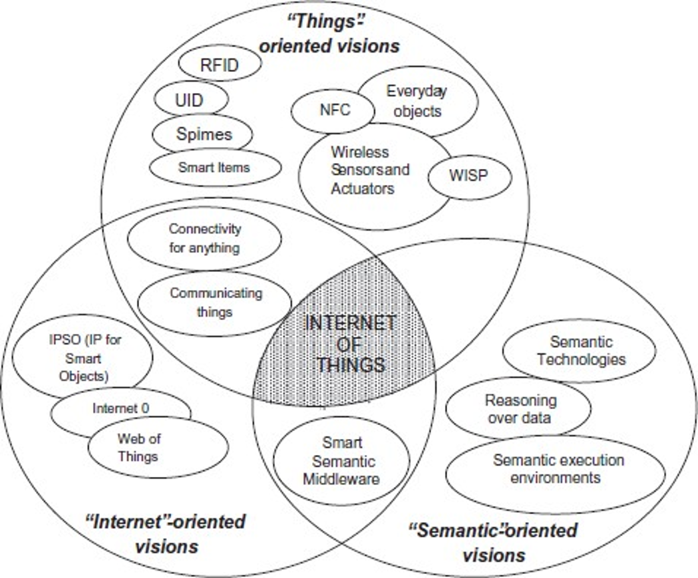

Introdução
Características e aplicações
Protocolos padronizados
IEEE 802.15.4e
6LoWPAN e RPL
CoAP e MQTT
IoT e Cidades Inteligentes
Roteiro
Introdução
Internet das Coisas (Internet of Things – IoT)
O termo IoT se refere:
Rede global que interconecta objetos inteligentes (smart objects) extendendo tecnologias da Internet;
Conjunto de tecnologias necessárias para realizar tal visão (ex: RFID, sensores/atuadores, dispositivos de comunicações máquina-máquina (M2M), etc);
Conjunto de aplicações e serviços que aproveitam estas tecnologias para desenvolver novas oportunidades de negócios
D. Miorandi et al. / Ad Hoc Networks 10 (2012)
Introdução
RFID
Redes ad hoc móveis (MANETs)
Redes de sensores
Máquina-máquina (M2M)
Redes veiculares (VANETs)
Redes FANETS (Flying Ad Hoc Networks)
Cidades inteligentes
Big Data
Introdução
Convergência de várias visões
